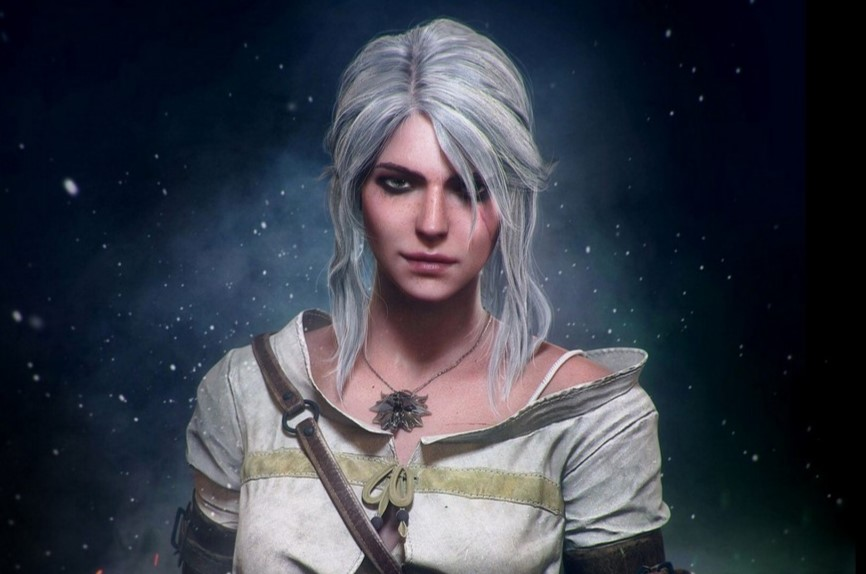
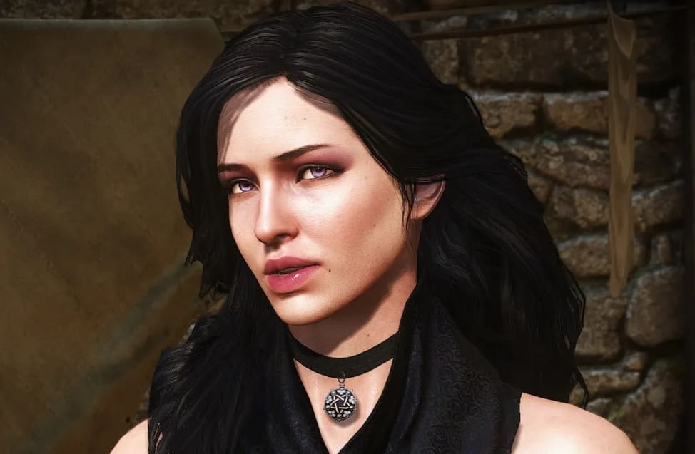
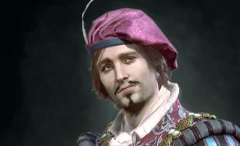

Любисток — видатний трубадур та товариш Геральта, відомий своїми баладами на всю Північ.

Цірі

Йеннефер

Любисток
Головний герой?
У франшизі йде плавний перехід від Геральта до Цірі у ролі протагоніста. З кожною частиною книги це стає все помітніше, а вже навіть і CD Project Red створюють нову гру, де головним героєм буде якраз Цірі, а не наш біловолосий відьмак
Мати Геральта була відьмою, хоча зазвичай вони втрачають здатність до народження дітей.